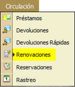
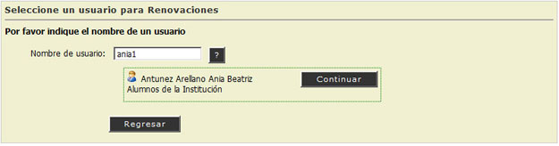
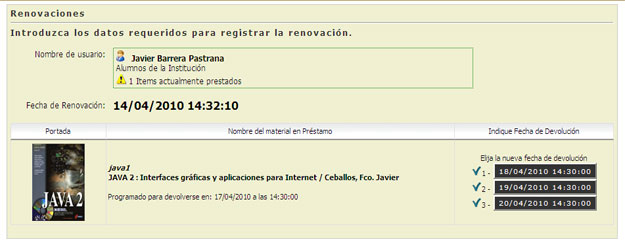
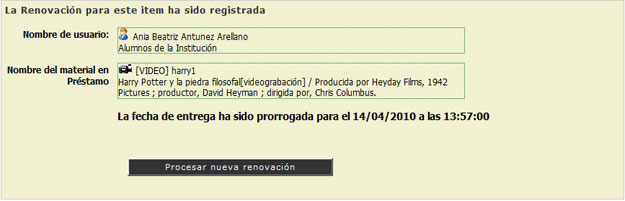

2.4. Renovaciones
En esta opción el Administrador del Sistema podrá realizar el Trámite de Renovaciones del Material a los Usuarios Resgistrados en la Institución.
REQUISITOS: Para realizar una Renovación deberá contar con un Nombre de Usuario y con Material en Préstamo.

- Escribir el Nombre de Usuario, Teclee [Enter].
- Si el usuario no existe el sistema mostrará un Mensaje de Alerta ("El usuario no fue encontrado").
- Si el usuario existe, el sistema mostrará el Nombre Completo del Usuario. (Continuar Paso No. 2)
- Hacer "Clic" en la opción [Continuar].

- Aparecerá una pantalla mostrando los datos requeridos del Usuario y el Material en Préstamo para Registrar la Renovación.

- El Sistema mostrará automáticamente las 3 posibles Fechas de Devolución del Material.
- Hacer "Clic" en la opción de la Nueva Fecha de Devolución.
- El Sistema mostrará una pantalla que indicará que la Renovación fué Registrada.

NOTA: El Botón con el Símbolo de Interrogación (?) , puede ayudarnos a Localizar o Consultar un Usuario de la Institución o un Ítem de un Material